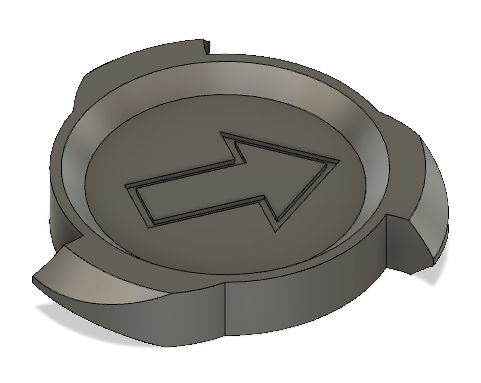

Today's assignment had three parts. I decided to tackle the first part of the assignment first, which was to program a microcontroller to produce an output using at least one button for input, including a conditional statement and a for looop.
I chose to use an LED as my output, which would utilize a for loop to gradually brighten after the button was pressed. Here is the circuit in action:
I used the internal pull-up resistor for my button loop, and the button was connected to pin 2 as an input. I connected the LED to pin 10 and set it up as an output. Here is the code:
int PWMpin = 10; // LED in series with 470 ohm resistor on pin 10
void setup() {
pinMode(2, INPUT_PULLUP); //pin 2 as input with internal pull-up resistor
pinMode(10, OUTPUT);
}
void loop() {
int sensorVal = digitalRead(2); //read pushbutton value into variable
if (sensorVal == HIGH) { //
digitalWrite(10, LOW); //turn off light
} else {
for (int i = 0; i <= 255; i++) { //turn on fade-in light
if (i<50){
analogWrite(PWMpin, i);
delay(30);
}else{
digitalWrite (10, LOW); // turn off light to reset fade when button is pressed again
}
}
}
}
To learn how to create 3D models in Fusion 360, I followed this tutorial to model a maker coin. Compared to the last time I modeled in Fusion 360, I felt a lot more familiar with the various features, although the video helped me learn the meaning of the different line colors. For example, blue means that the object is not fixed in space whereas black means it is. I also was introduced to the project feature, which would have been very useful in my previous Fusion 360 models, in hindsight. I also finally figured out how dimensions work since I previously had trouble with changing dimensions. One of the new features I learned was the ability to taper an object when extruding, which would have been useful when I was designing a wheel previously where I had instead used filet on the inside rim to produce a similar effect. I also used the revolve feature for the first time to cut detailing into the teeth of the coin. One difference in my maker coin compared to the one in the video was that I did not have a logo to cut into the coin, so I made an arrow in the center instead. Here is my finished product:

For the third part of our assignment this week, Victoria helped me figure out what I will need to design my Simon Says Alarm Clock. She showed me this website which can help me make a box with finger joints. For my project, I will be able to use Fusion 360 to cut some holes in this box model for buttons and an LCD display, and I will send the file to the Fablab for laser-cutting, possibly on acrylic.